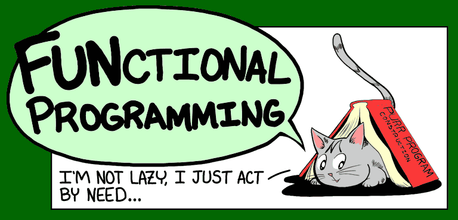
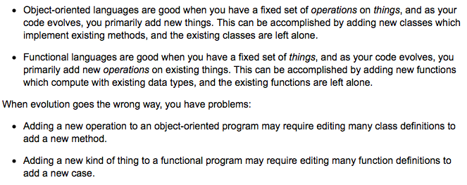
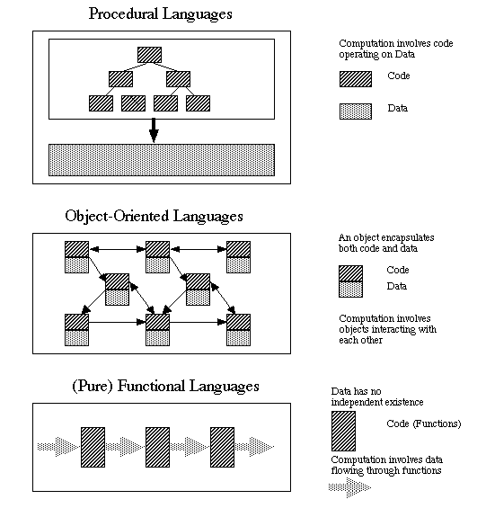

Functional vs. Object-Oriented Programming

From a Newbie's Perspective
I chose this topic to research not because I expected to write anything groundbreaking on the subject, or perhaps anything even coherent to someone who already understands the material, but as a beginning programmer I am really interested in the different paradigms and ways of thought behind programming languages and I want to learn as much as I can about them.
My first observation after beginning my research, was that there are no easy clear distinctions that are universally agreed upon as the exact differences between functional and object-oriented programming. Although everyone seems to be getting at or trying to get at something roughly similar, it was not as simple as a copy and paste wiki search. The other observation I made pretty quickly is that the descriptions out there are not easy to understand. Not for a beginning programmer and certainly not for someone totally unfamiliar with the material.
Frenemies
Another thing I picked up right away is that while some languages are considered to be of one type or another, most authors I read were in agreement that many of the languages also exhibited signs and behaviors from both styles within themselves. That is to say that while certain languages may be considered object-oriented or functional in general, it is not impossible to use them in the opposite context in many cases. Although the lines do blur in some areas, there was a general agreement on the main distinctions of the philosophies.
Software Evolution
One of the best descriptions I read articulating why someone would choose one language over another had to do with the lifecycle and evolution of their program.

That made sense to me, because I know how important laying a solid foundation can be when beginning a new project or application. How you choose to set things up in the beginning will have a greater and greater effect the larger your program grows. Adding new functionality or having to make modifications can vary anywhere from minutes to days of work depending on how you chose to structure your code to start with, and choosing a language based on the type of additional work you see yourself doing down the road does make a lot of sense to me.
Building Blocks
Another concept I came across that was helpful in my beginning to distinguish the differences between languages was the idea of a central building block. A concept or capability of the code that you would organize everything else around.
In this case, the difference was explained to me as follows: The basic building block of functional programming is the function. It takes an input, performs some sort of operation on it and returns an output. Everything else is designed to either be passed into one of these functions or grab the result that one of them returns. Of course object-oriented languages also have functions which are used in the same way, but the idea here is that these are the central building block of your application around which you will contruct everything else. And whether you want to use a functional programming language depends on whether it makes sense to build your program this way.
In object-oriented programming however, the central building block is the object itself, or class. Your functions in this model will primarily exist between and upon these objects and their attributes. The thinking and the design revolves around things that do things to other things, instead of doing things to things for other things that do things.

Conclusion
So like I said in the beginning, I was not hoping to master this topic or walk away having seen it in a brand new light for everyone. My primary take away from all of this was that the differences between programming languages are not obvious or easy to understand for those who are unfamiliar with them and even amongst those who know them well there is not complete uniformity of concensus. I have however in doing this research at least begun to understand some of the differences and for that I am grateful. Having only ever used or been exposed to object-oriented languages, and being relatively new to all of them at that, I don't expect to ever fully understand or apprieciate the differences until I've had a chance to sit down and beginning programming in a functional language. But I look forward to the time I have that opportunity, and I know I will always learn more about what I'm most familiar with by learning about that which is totally different.
Happy Coding!